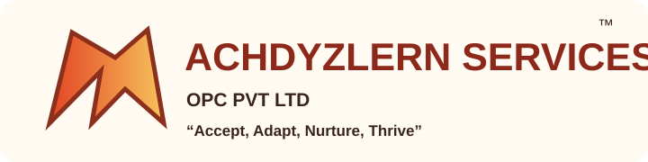

Digitally safe
Zero data exposure, child-safe architecture and no third-party tracking. Privacy is structural, not a setting.

Sini's Brainchild · India
A premium, accessibility-first learning and performance ecosystem for brilliant minds that learn differently—from early intervention to lifelong career growth.
“Struggle is never the absence of intelligence.”
AchDyzlern Services™ — Achieve & Ace Dyslexic Learning & Performance — is India's first and only ecosystem built from the ground up for brilliant minds that learn differently.
Our AchDyzlern 360° NI-AI-SSMRB™ Integrated Learning & Performance Framework brings natural intelligence and artificial intelligence together with structured, sequential, multisensorial, repetitive and byte-sized learning.
See the framework ↗Zero data exposure, child-safe architecture and no third-party tracking. Privacy is structural, not a setting.
Stigma-free interactions, strength-first language, emotional check-ins and a guaranteed zero-judgement zone.
Universal Design for Learning at every layer: screen-reader ready, sensory-friendly, voice-first and flexible.
A proprietary NeuroInclusive AI framework that personalises structured, sequential, multisensory and brain-based learning in real time.
From foundational skill-building and academic catch-up to competitive exam preparation and workplace performance coaching.
For struggling school and college-going learners, dropouts, failed learners, late learners, neurodivergent learners and performers.
100% digitally and emotionally safe, accessible, NI-AI-SSMRB™ integrated learning, academic, remedial and performance ecosystem for struggling yet intellectual diverse minds in India.
Natural intelligence + AIBridge gaps towards eligibility for higher education, including a diploma pathway after 8th.
Graduate, postgraduate and masters pathways with 360° learning support for neurodivergent and struggling learners and performers.
Digital Inclusion, Accessible & Learning Support Cell: the institutional-grade command hub for learners, parents, educators, schools, corporates and CSR programs.
Interactive, fun-based multisensorial learning and performance resources for school and college-going neurodivergent and struggling learners.
For every kind of brilliant
ADHD · Dyslexia · Autism · SLD · late learners · returning learners · performers who need a different route
Book a 60-min consult ↗Start with a conversation. No labels, no judgement—just a clear next step.